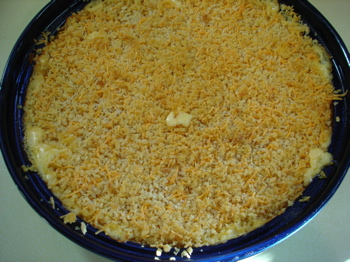

Ruth Reichl's macaroni and cheese
After the wisdom tooth extractions yesterday, Calvin was still on a restricted diet today and requested macaroni and cheese. Leland and I have talked about this dish several times here but I don’t think we’ve ever given the recipe. Ruth Reichl calls this the world’s best macaroni and cheese, and she does not exaggerate. It bears as much resemblance to what most of us grew up on as Belgian chocolate does to a Hershey bar.
But be warned if you serve this to guests; the conversation will stop and the room will resound with gentle moans and sighs of pleasure.
And a note; do not substitute regular bread crumbs for the panko, the panko is essential for the delectable crunchy crust. And while the recipe calls for 3/4 pound of elbow macaroni, I used a 13 1/2 ounce box of Ronzoni whole grain spirals and it seemed to be just right.
Macaroni and Cheese from Gourmet Cookbook, Ruth Reichl
FOR TOPPING
- ¼ stick (two tablespoons) unsalted butter, melted
- 2 cups panko (Japanese bread crumbs)
- 1 cup coarsely grated extra-sharp Cheddar (about 4 ounces)
FOR CHEESE SAUCE AND MACARONI

- 3 tablespoons unsalted butter
- 3 tablespoons all-purpose flour
- ½ teaspoon red pepper flakes
- 2 ¾ cups whole milk
- ¾ cups heavy cream
- 4 cups coarsely grated extra-sharp Cheddar (about 1 pound)
- 2 teaspoons Dijon mustard
- 1 ½ teaspoons salt
- ¼ teaspoon freshly ground black pepper
- ¾ pound elbow macaroni
Put a rack in the middle of the oven and preheat oven to 400 degrees F. Butter a 3-quart shallow baking dish.
MAKE THE TOPPING: Stir together butter, panko, and cheese in a bowl until well combined.
MAKE THE SAUCE: Melt butter in a 5-quart heavy pot over moderately low heat. Whisk in flour and red pepper flakes and cook, whisking, for 3 minutes to make a roux. Whisk in milk in a slow stream, then bring sauce to a boil, whisking constantly. Simmer, whisking occasionally, for 3 minutes. Stir in cream, Cheddar, mustard, salt, and pepper. Remove pot from heat and cover surface of sauce with wax paper to prevent a skin from forming.
COOK THE MACARONI AND ASSEMBLE THE DISH: Cook macaroni in a 6-quart pot of boiling salted water (1 tablespoon salt per every 4 quarts of water) until al dente. Reserve 1 cup pasta cooking water and drain macaroni.
Stir together macaroni, reserved cooking water, and sauce in a large bowl, the transfer to baking dish (mixture will be loose).
Sprinkle topping evenly over macaroni. Bake until top is golden and bubbling, 25 to 35 minutes.
COOK’S NOTE: The topping can be made up to 1 day ahead and refrigerated, covered.
Comments
The woman is not lying—this is some of the best macaroni and cheese I’ve ever had. If you’re not close to an Asian market, Whole Foods and FD both have panko.
The last time I made it, I divided it into two baking dishes and doubled the topping recipe.
Well, that looks fantastic! Just reading the recipe is making me hungry.
I’ll try it with the mustard, but that just doesn’t seem right. I know a chef in Dallas who uses truffle oil in his macaroni and cheese, so maybe that would work well, too. :)
Mustard is frequently used to enhance the flavor of a cheese sauce, Colin! Please, trust Leland and me and try the recipe as written; no truffle oil, unless that was a joke, I just saw the emoticon.
Of course I’ll try it as written… I’ve just never really liked mustard with cheese.
Oh, I just made this and it was fabulous. I had some truffles I had gotten as a gift and put them in there, which only made the mac and cheese more wonderful.
This Mac N Cheese recipe sounds amazing!!!
Can’t wait to make it for my family.
I am making this recipe 4x the original should I quad the salt? the mustard?
Hi Joanne—Since you can taste the sauce as you are making it I would start by doubling the salt and mustard, taste, then decide. Just guessing I think you’ll need the full amount of mustard for the rich flavor but maybe not all the salt.
Add a comment